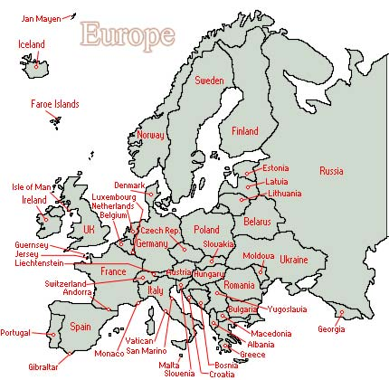
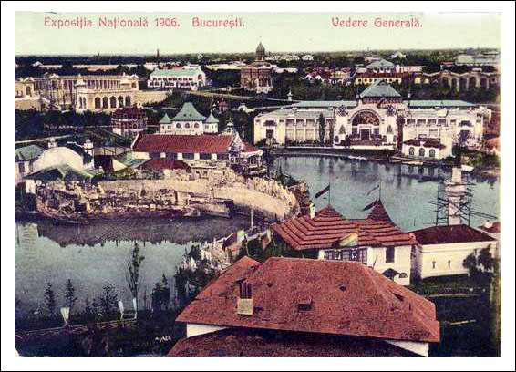
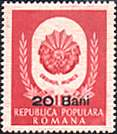
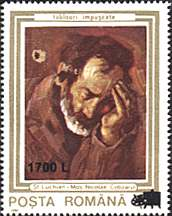
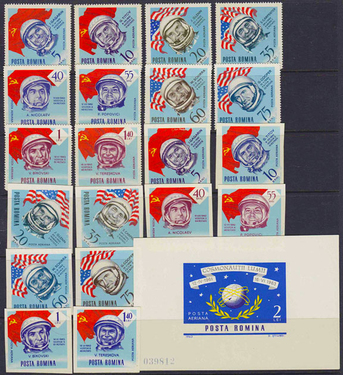
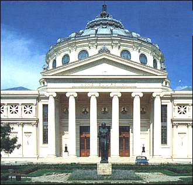
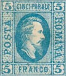

The Country
Discover Romania through its landscapes, cities, people and cultural heritage as depicted on stamps.

Where is Romania? Views 1947 - 1948
Views 1947 - 1948 Dacia Felix
Dacia Felix Village Museum
Village Museum Classical Stamps
Classical Stamps Costumes
Costumes
General Exposition 1906 Sputnik I and II - 1957
Sputnik I and II - 1957 Brussels 1958 Overprints
Brussels 1958 Overprints Stamps Printing
Stamps Printing About Inflation
About Inflation Monetary Reform 1947
Monetary Reform 1947
Monetary Reform 1952
Surcharges 2000 Redenomination 2005
Redenomination 2005 Cancellations 2010
Cancellations 2010 A Joint Issue
A Joint Issue
My Philatelic Youth Revisited University Square
University Square
Palace Square Watch Museum
Watch Museum
The Name of the CountryComplete article directory
The Country
Where is Romania?Views 1947 - 1948Dacia FelixVillage MuseumClassical StampsWatch MuseumThe Name of the Country
Folk Costumes
Postal History
My Bucharest
Articles retain their original text and illustrations in the refreshed layout.